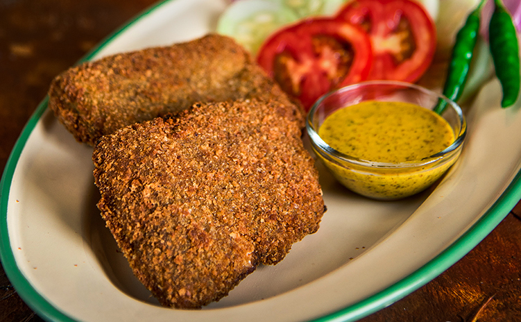

Fish Fry

Description
Fish fry, also called diamond fry, is a crumb-coated fillet of bhetki. Fish fries are served by cabin-style restaurants, small take-away shops, street food vendors, as well as in catered events such as weddings.
- Prep time : 31-40 minutes
- Cook time : 11-15 minutes
- Serve : 4
- Level of Cooking : Easy
- Taste : Spicy
Ingredients
- Boneless bhetki fish fillets cut into 1 inch pieces, 250 grams
- One medium finely chopped onion
- Green chillies, 2
- Ginger roughly chopped, 1 inch
- Garlic cloves, 4-5
- Fresh coriander leaves, finely chopped, 3 tablespoons
- Salt to taste
- Lemon juice, 1 tablespoon
- Garam masala powder, 1 teaspoon
- Cumin powder, 1/2 teaspoon
- Two beated eggs
- Dried breadcrumbs for coating
- Oil to deep fry
- Onion rings to serve
- Lemon slices to serve
- Kasundi mustard to serve
Method
- Blend together onions, green chillies, ginger, garlic and coriander leaves with sufficient water into a fine paste.
- Put fish pieces in a bowl. Add salt and lemon juice and mix well. Add the prepared paste and rub well. Add garam masala powder and cumin powder, mix and set aside the fish mixture to marinate for 15-20 minutes.
- Dip marinated fish pieces in beaten eggs and coat with breadcrumbs.
- Heat sufficient oil in a pan. Deep-fry the fish pieces till they turn golden brown. Drain on an absorbent paper.
- Serve hot with onion rings, lemon slices and Kasundi mustard.
Back to Odin Recipes